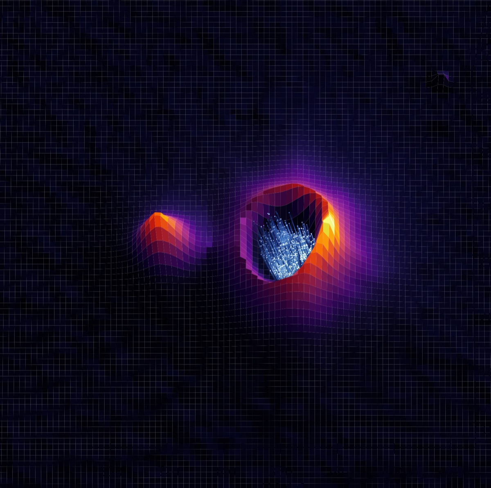
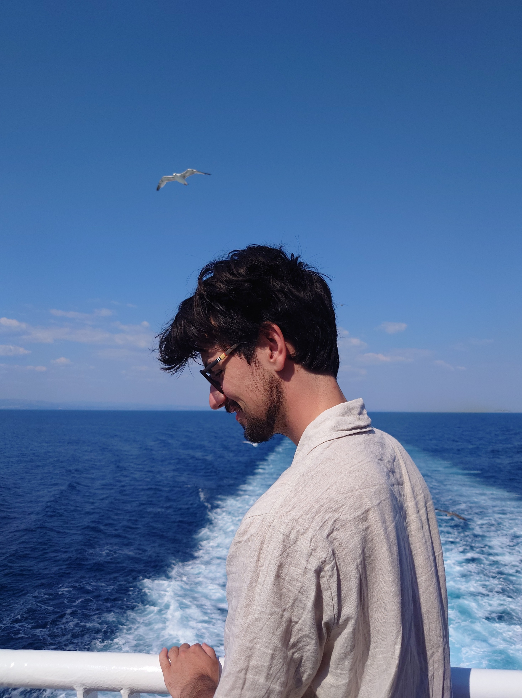
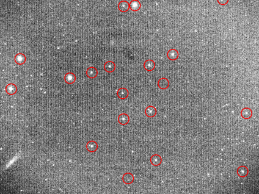
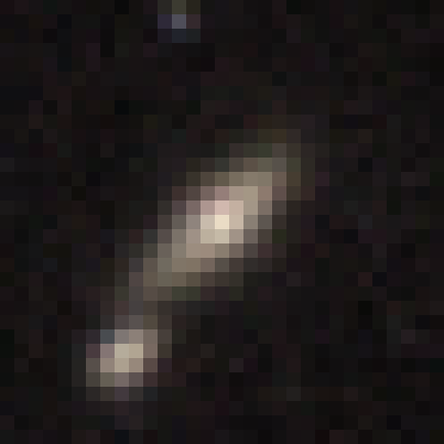

Characterization of the NIRPS Guiding Camera for Close Visual Binaries
How faint a companion star can be and still be seen by the NIRPS guiding camera, and how much of its light leaks into the fibre.
Astrophysics · Scientific Computing · Data Analysis · Science Communication · Visual Storytelling
I study astrophysics at the University of Geneva and work across scientific research, data analysis, programming, science outreach, and visual media. This site is a collection of projects, research, and creative work I have developed along the way.


How faint a companion star can be and still be seen by the NIRPS guiding camera, and how much of its light leaks into the fibre.

Finding the stars in a telescope image, placing them on the sky, and comparing their counts with Pan-STARRS catalogue fluxes.
Relative photometry and analysis of exoplanet transit light curves.

A neural network built from scratch in Python and NumPy that tells elliptical galaxies from cigar-shaped ones.
Ongoing · Master's Thesis
Study of a polarimetric mode for the RISTRETTO instrument
Instrumentation and data analysis related to the use of polarized reflected light for exoplanet characterization, in connection with the RISTRETTO instrument at the University of Geneva.
Read about the thesis